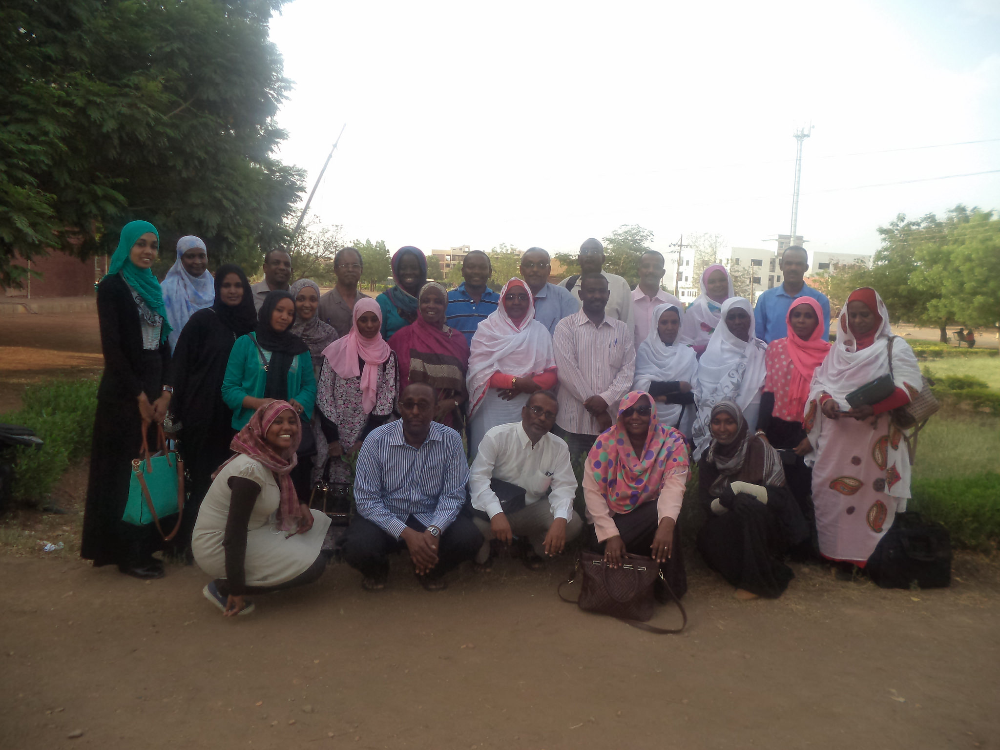

Web 2.0 & social media training, an initiative by the Technical Centre for Agricultural and Rural Cooperation (CTA) in Africa, Caribbean and Pacific (ACP) countries, provides practical training for practitioners of information and communications for development and other agricultural stakeholders on how to use Web 2.0 technologies in their work and lives. And the learning process is made enjoyable and memorable through the use of practical sessions, a process that allows learners to engage and interact with the different tools.
I have had the privilege of conducting a couple of Web 2.0 and social media trainings on behalf of CTA in Africa, and I must admit that each country that I have been to has come with its own experiences. My most recent training was in the republic of Sudan, at the University of Gezira , Wad Madani, about 200 km from Khartoum, the capital city.
Going to Sudan came with a mixture of feelings, both excitement and uncertainty. I had questions like: Wasn’t it too hot in Sudan? (Considering that I come from Uganda where the weather is just ‘okay’.); Would I be forced to dress like the local women there? How about the language? I had no idea how I was going to communicate in a country where Arabic is the main and predominantly spoken language. As a matter of fact, the only word I knew in Arabic was shukran, meaning ‘thank you’.
The exciting part of it all was the fact that I was going to train men and women from academia. It was also the first time I would be travelling to Sudan to experience a new culture and, most important, to share knowledge.
I arrived in Khartoum on 9 May 2015, together with a team from the Regional Universities Forum for Capacity Building in Agriculture (RUFORUM), with whom the training was to be conducted. Straight away, we set off for Wad Medani to prepare for the event. Of course it was very hot and the people were very warm and friendly.
The next day, a Sunday, our training began. I had to adjust to the new ‘Monday’. In Sudan, Sunday is not a holiday like it is in Uganda, and the working week starts on Sunday. During day 1 of the training, we were reminded that we needed to include time for prayers in our agenda for all the training days. This is something I had personally never experienced but the reason was obvious.
Then came the language. Since the participants where mainly from the University of Gezira, an academic institution, they had a fair command of English and that made it possible for the training to be given in English. However, we had to speak a bit slower and very clearly and use lots of gestures. It was amazing how effective the learning process was. The level of enthusiasm and commitment that the trainees showed was overwhelming.
Even though the training generally went well, it came with a couple of challenges beyond our control. For example, Sudan is on a US blacklist concerning Internet access, which means that some websites are not accessible from Sudan. For instance, when registering on Twitter the user has to confirm his/her phone number and ‘Sudan’ is not among the drop-down list of options. Also Picasa, an image organiser and image viewer used for organising and editing digital photos, is blocked in Sudan. However, this did not stop us from going ahead with the training, but it did mean that we had to look for some alternative platforms.
Overall, for me as a trainer it was a totally new learning experience. It made it possible for me to compare experiences with my previous trainings and highlighted the need to always be prepared when conducting training in a new country.
Are you a trainer? What are some of the unique experiences you have encountered that you would like other trainers to learn from? Please share them.

Some of the participants at the Web 2.0 and social media training held in Sudan, 10–15 May 2015.
 Dgroups
Dgroups